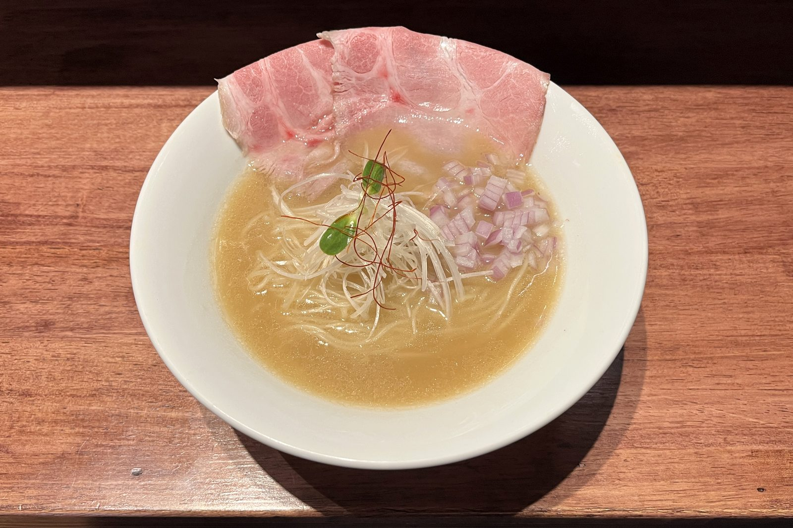
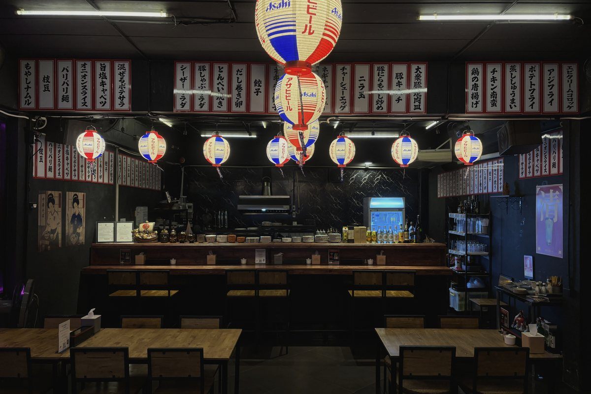

淡麗鶏醤油そば
澄んだ鶏だしに醤油。すっきりした後味で、飲んだあとの締めにも。
大阪・阿波座「麺LABO 唯奏」の店主、辻田裕也さんが監修する鶏のラーメン。昼も夜も、ソイブアカオのツリータウンで食べられます。
2024年3月、MENLABOはパタヤのラーメン店として、淡麗鶏塩そば一杯から始まりました。食べてくれた方が「ソイブアカオの隠れたラーメン屋」と紹介してくれて、少しずつ知られるようになりました。
辻田さんは、大阪・阿波座のラーメン店「麺LABO 唯奏」の店主です。鶏の旨みを生かしたラーメンをつくっています。MENLABOのラーメンは辻田さんの監修で、店の名前も、阿波座の店の了承を得て名乗っています。
澄んだ鶏だしの「淡麗」と、鶏を炊き込んだ濃厚な「鶏白湯」。それぞれ塩と醤油があります。
澄んだ鶏だしに醤油。すっきりした後味で、飲んだあとの締めにも。

同じ鶏だしを塩で。鶏の旨みがいちばんよく分かる一杯で、MENLABOはこの一杯から始まりました。

鶏をじっくり炊き込んだ白湯スープを塩で。とろりと濃く、こってりが欲しい日に。

鶏白湯に醤油のコク。濃厚さと香ばしさを一度に。
辛いものが好きな方には、汗をかいて締めるジャン麺もあります。
価格はすべてタイバーツ（VAT込み）

豚肩ロースを65〜70℃のお湯で3時間20分。低い温度でじっくり火を通すので、しっとりやわらかく、鶏のスープの邪魔をしません。

仕上げの香味油には唐辛子を入れていて、ほんの少しピリッとします。辛いのが苦手な方は、ご注文のときにお伝えください。

カウンターは6席。ひとりでも気軽に入れます。メニューは日本語・英語・タイ語・中国語です。
GrabとLINE MANで注文できます。鶏白湯は冷めると固まってしまうため、お店でだけお出ししています。